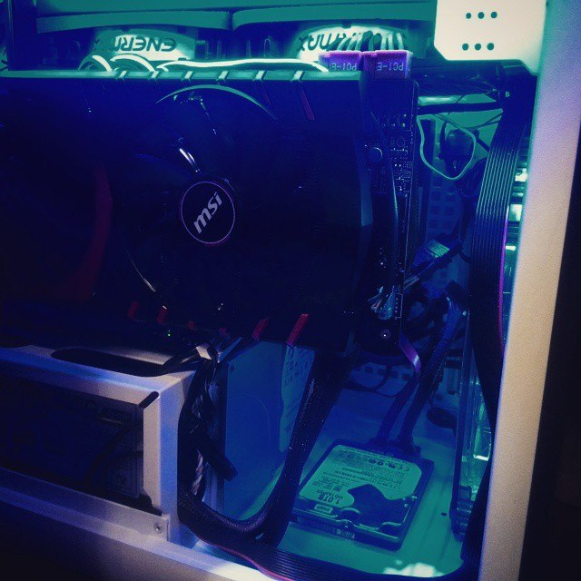
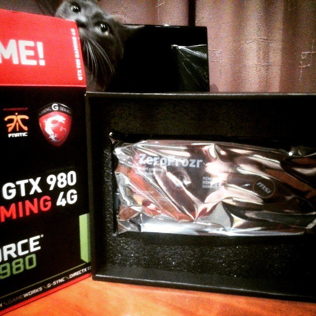
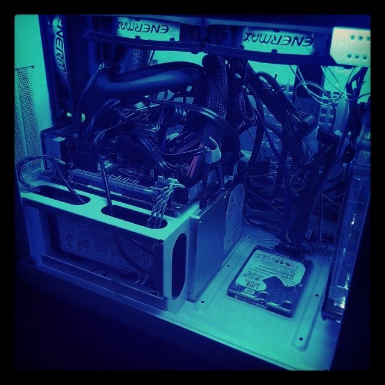
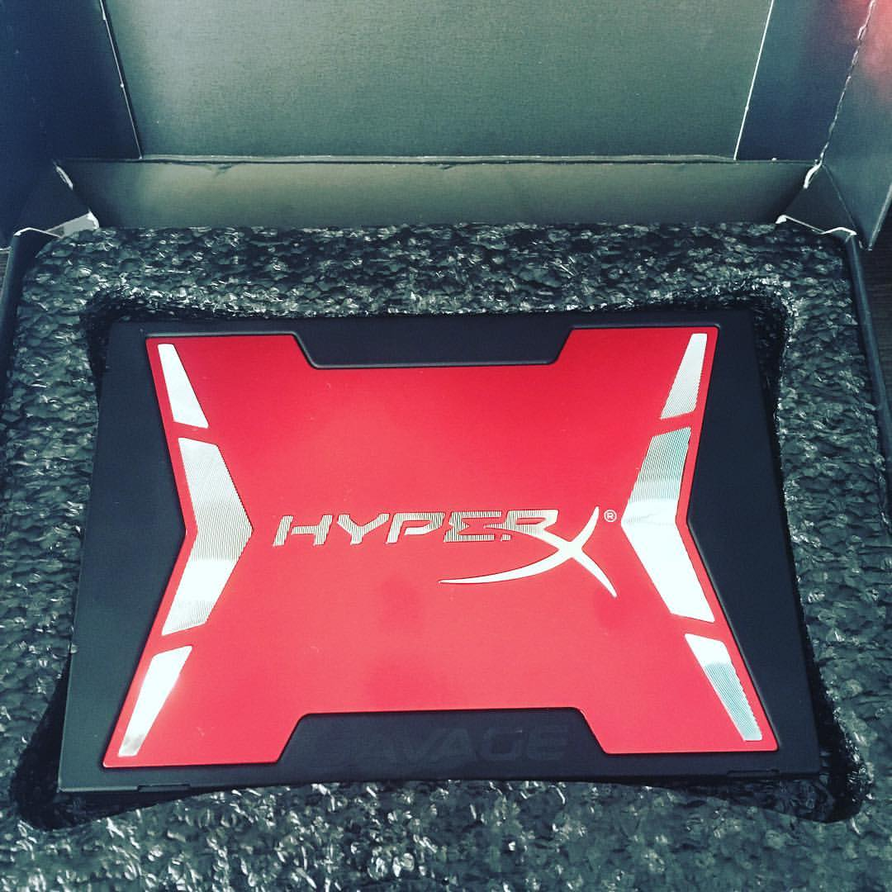

My First PC





7 March 2014 is the first clear milestone in the history of my own PCs. I wanted more than a powerful machine: the goal was a neat compact system, so I built it around a white BitFenix Prodigy Mini-ITX case.
The CPU was an Intel Core i7-3770K with 4 cores / 8 threads, running at 3.5 GHz and boosting up to 3.9 GHz. The motherboard was an ASUS P8Z77-I DELUXE based on Intel Z77. Memory was 16 GB of G.Skill DDR3. I remembered the speed as perhaps 2600 or even 3200 MHz, but this board officially supports up to DDR3-2400 (OC), so I am leaving the exact RAM clock unclaimed.
Storage consisted of an 80 GB Intel SSD, a 240 GB Kingston HyperX 3K and a 500 GB Western Digital Blue hard drive. The red HyperX drive in the photo is the 3K series, not the later Savage model.
CPU cooling was handled by a Corsair Hydro Series H100. Later, the system received a major graphics upgrade to an MSI GeForce GTX 980 GAMING 4G with 4 GB of GDDR5. The GTX 980 photos therefore show a later stage of this PC, not the original March 2014 configuration.
Looking back, this machine already established a theme that kept returning in later builds: fitting as much desktop performance as possible into a compact case.